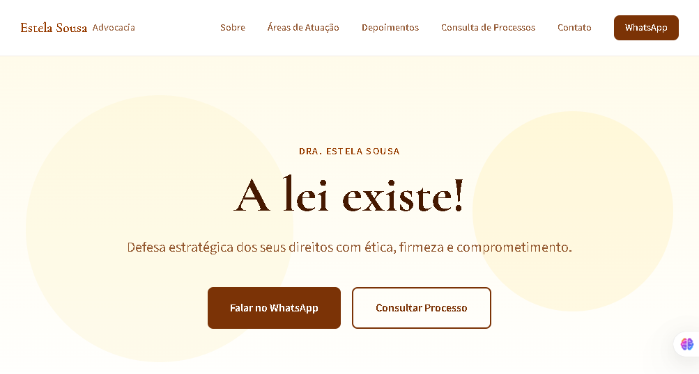
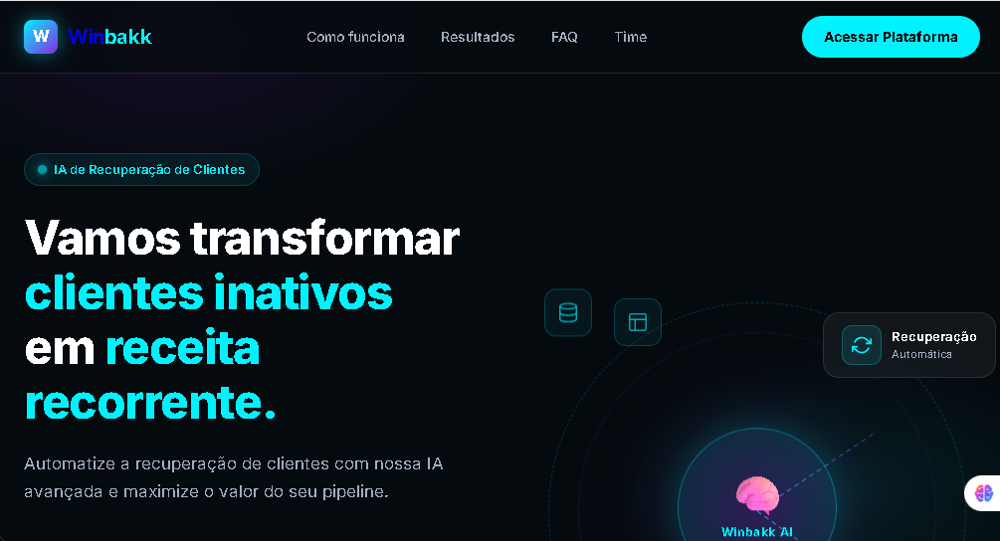

Estela Sousa Advocacia
Site institucional para escritório de advocacia com áreas de atuação, depoimentos, consulta de processos e integração com WhatsApp.
Ver projeto →Projetos entregues com foco em performance, responsividade e resultado para o cliente.

Site institucional para escritório de advocacia com áreas de atuação, depoimentos, consulta de processos e integração com WhatsApp.
Ver projeto →
Landing page para startup SaaS com IA, seção de resultados, integrações, FAQ e chamadas para WhatsApp e Calendly.
Ver projeto →
Site institucional com foco em manutenção de computadores, redes e criação de sites em Santos, SP. Com SEO e performance otimizados.
Ver projeto →Fale comigo e receba um orçamento sem compromisso em até 24 horas.
Solicitar orçamento →